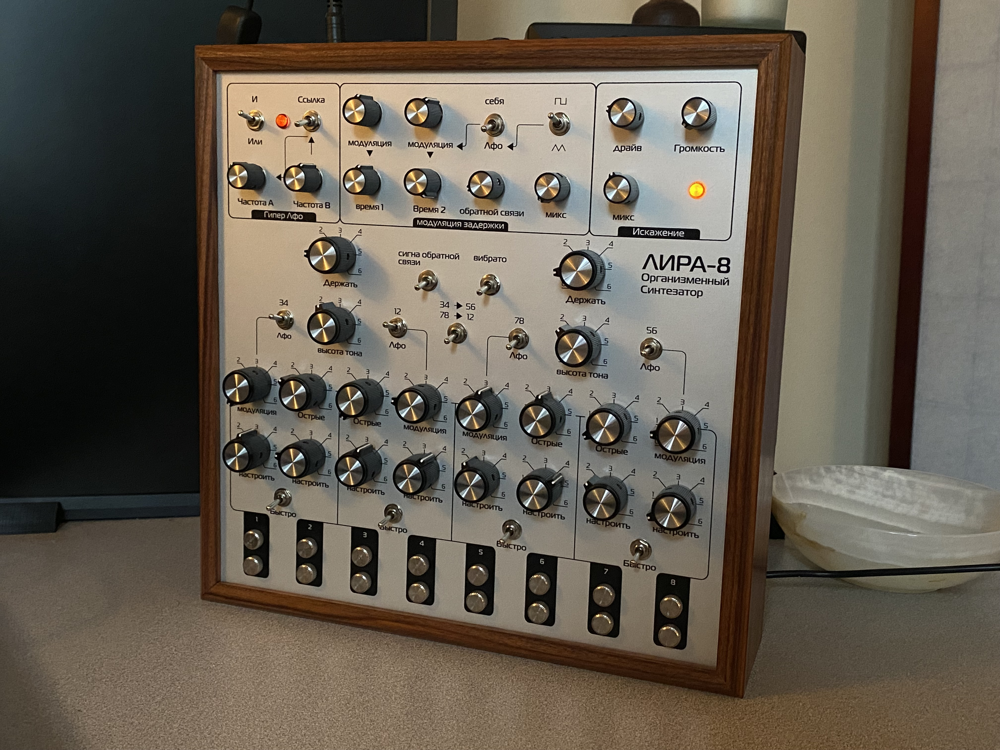
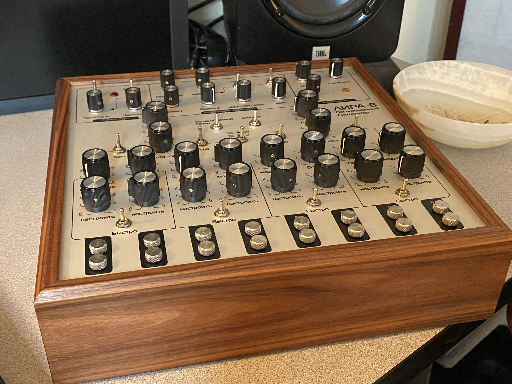
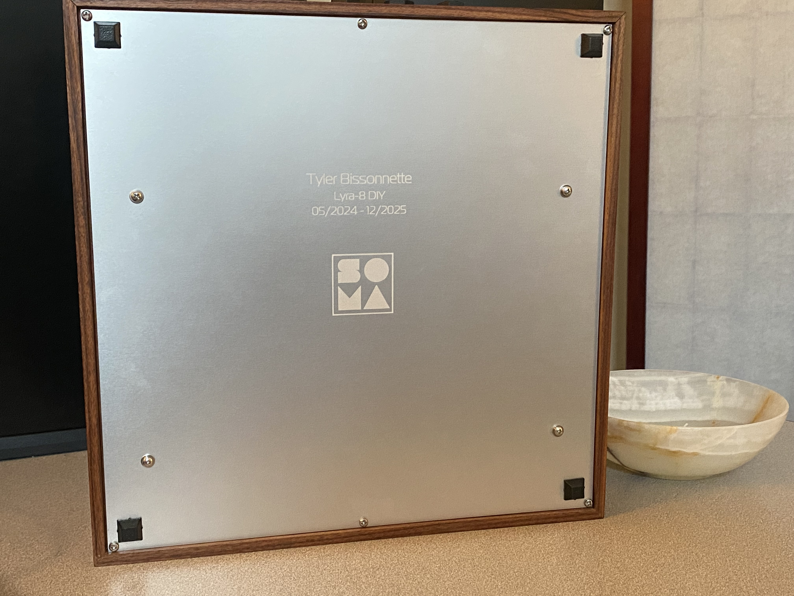
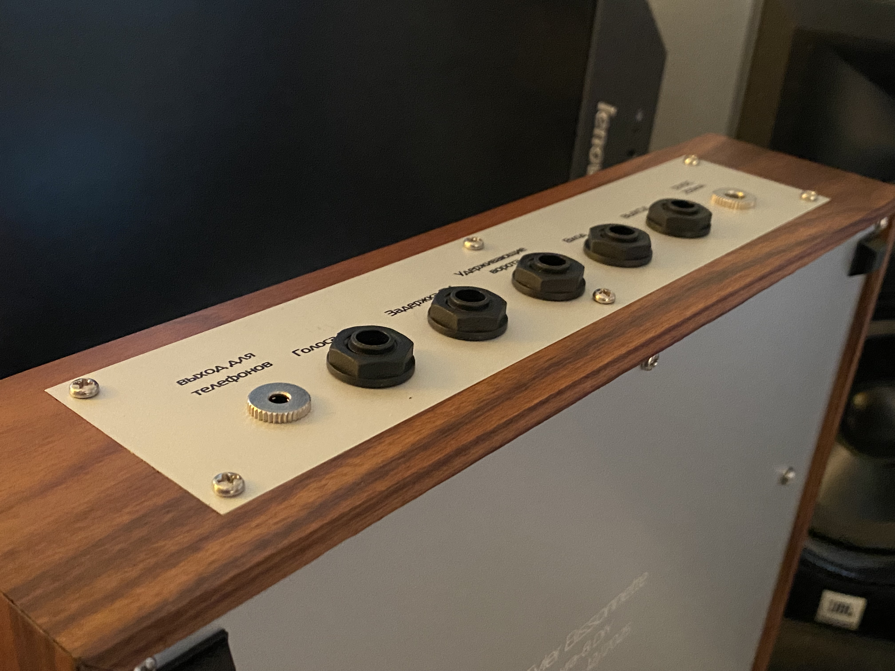
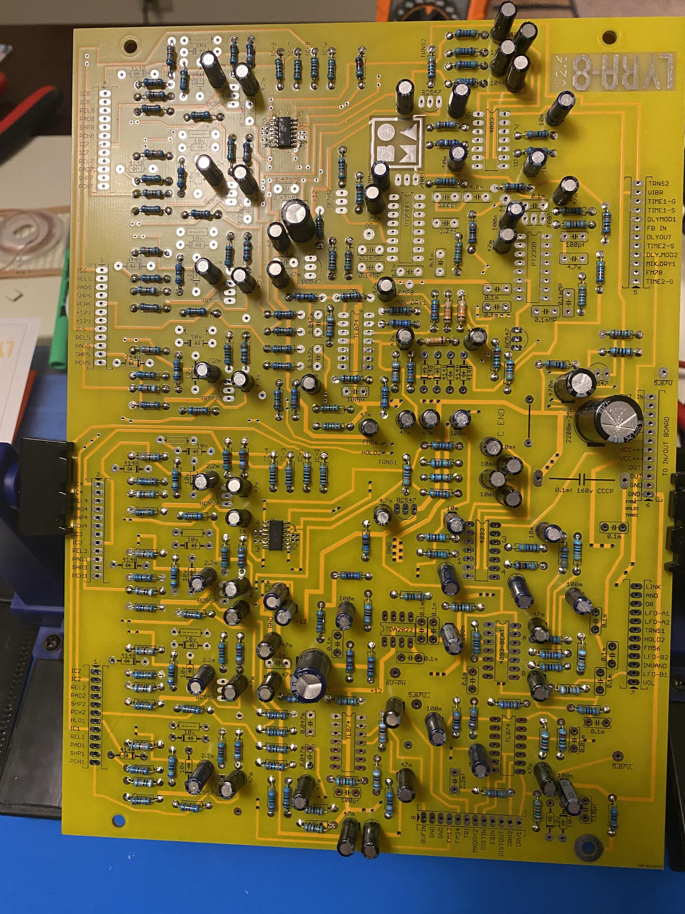
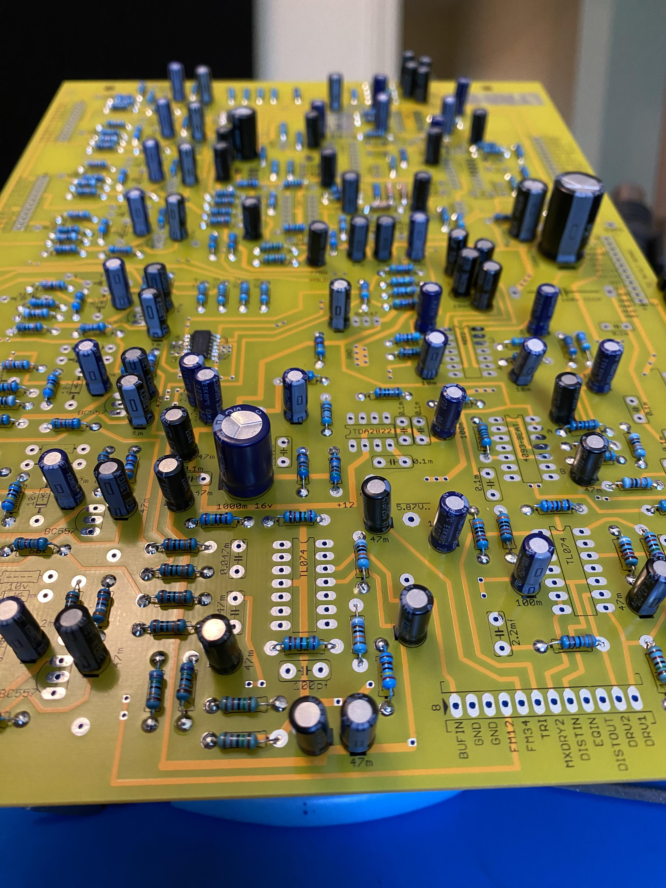
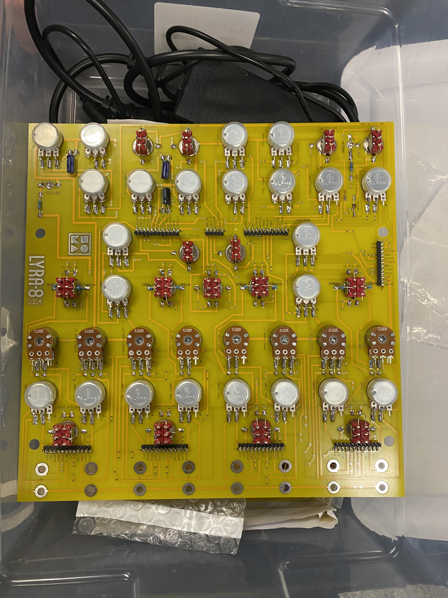
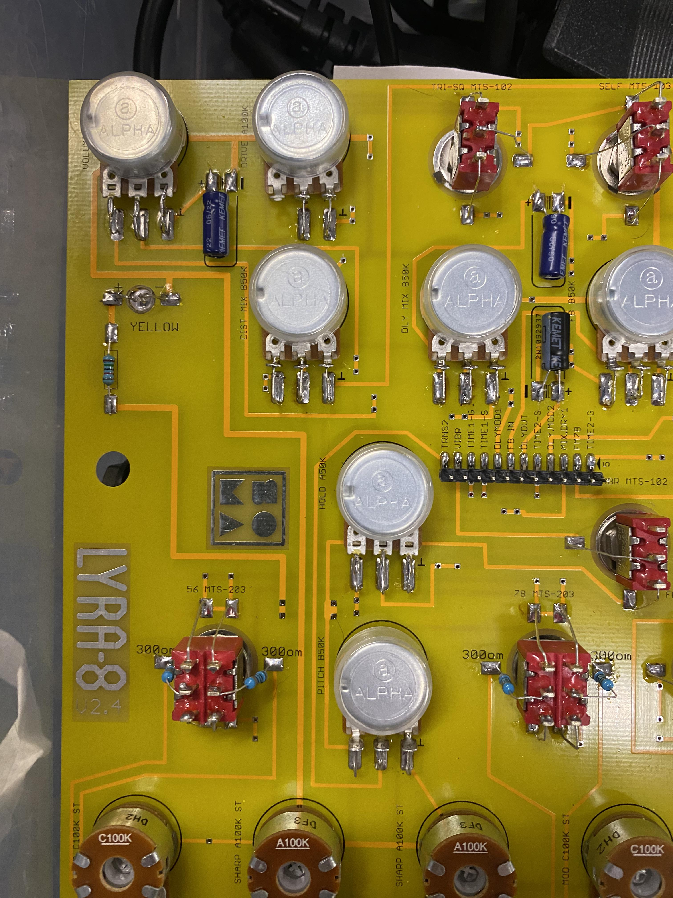
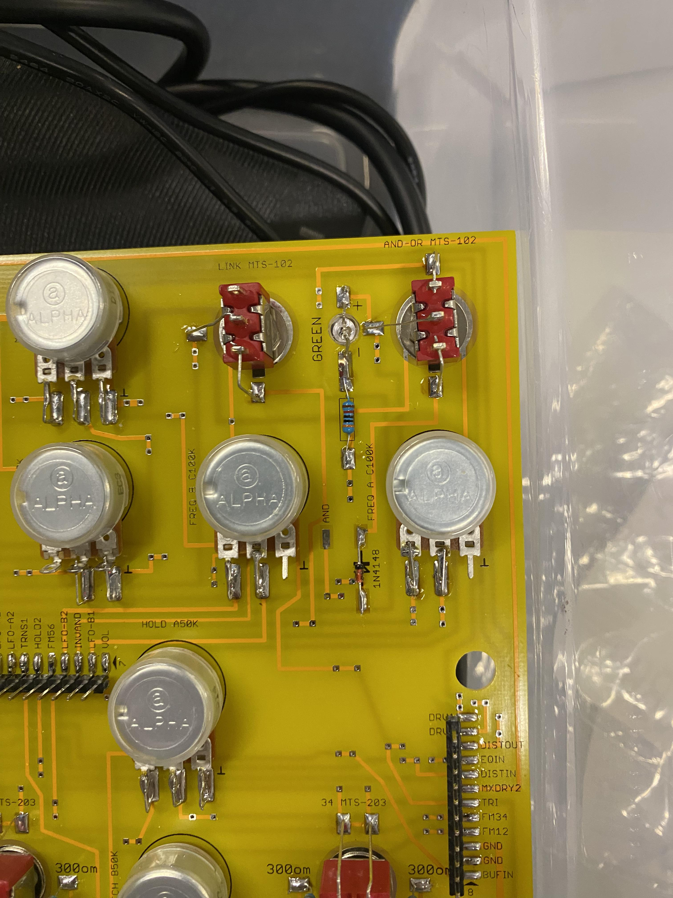

Soma Lyra-8 DIY Build
Overview
Sourcing components, assembling, and calibrating the Soma Synths Lyra-8. Building this complex analog machine requires following massive schematics and maintaining intense soldering discipline.





Assembly & Soldering
The sheer density of the board meant that a single cold solder joint could kill an entire voice. I had to utilize multimeters and oscilloscopes to trace the signal path and calibrate the non-linear analog delays.




